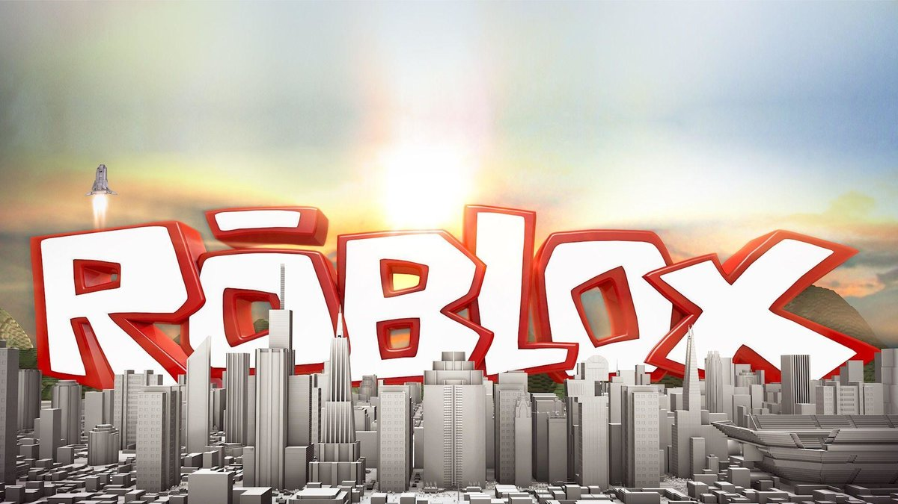

Roblox

Roblox
Roblox — многопользовательская онлайн-платформа, которая позволяет пользователям создавать свои собственные и играть в созданные другими пользователями игры. Платформа содержит созданные пользователем игры и виртуальные миры, охватывающие широкий спектр жанров, от традиционных гонок и ролевых игр до симуляций и полос препятствий[1]. По состоянию на август 2019 года Roblox имеет более 100 миллионов активных пользователей в месяц, обогнав Minecraft с 90 млн пользователей[2].
Roblox Studio
Roblox — это платформа для создания игр, которая позволяет игрокам создавать свои собственные игры, используя собственный движок Roblox Studio. Игры кодируются в системе объектно-ориентированного программирования, использующей язык программирования Lua для управления игровой средой[3]. Пользователи могут создавать игровые продукты, представляющие собой приобретаемый контент через разовые покупки, а также микротранзакции через продукты разработчика. Разработчики на сайте обменивают Robux, заработанный на различных продуктах своих игр, на реальную валюту через систему Developer Exchange[4] и Premium Exchange. Процент доходов от покупок делится между разработчиком и Roblox[5][6].